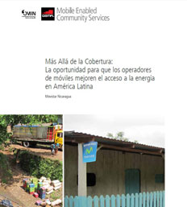
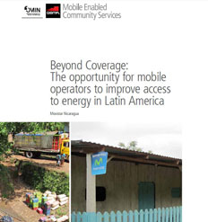

Más allá de la cobertura: la oportunidad para los operadores móviles de mejorar el acceso a la energía en América Latina
Este blog fue escrito por Mary Roach de Mobile Enabled Community Services de la GSMA y Zachary Levey del FOMIN
A lo largo y ancho de América Latina y el Caribe, millones de personas viven en la pobreza, sin acceso a la iluminación, instalaciones de cocina limpias o conexión a la red de electricidad. Llegar a estos usuarios requiere una nueva mirada a un viejo problema al igual que asociaciones con jugadores no convencionales para promover la innovación social en el sector de la energía.
Recientemente, se ha hablado mucho acerca del papel que podría jugar la industria móvil en la provisión de energía para áreas y familias en la base de la pirámide económica que se encuentran fuera de la red. Pero, ¿Cómo se ve esta oportunidad de negocio en el contexto latinoamericano? En 2012, el Programa Servicios Comunitarios Móviles de la GSMA, con el apoyo del Fondo Multilateral de Inversiones del Grupo BID, se propuso evaluar la oportunidad para que los operadores móviles de América Latina mejoren el acceso a energía. Hoy el FOMIN y la GSMA se complacen en anunciar un nuevo reporte que provee un caso de estudio y un repaso de las oportunidades en el terreno en el mercado nicaragüense, basándose en la red de Movistar Nicaragua, una subsidiaria de Telefónica, el operador global con base en España. Las conclusiones del estudio incluyen:
- Existen alrededor de 31 millones de personas que viven sin acceso a la red de electricidad comercial. Sin embargo, estimamos que unas 11 millones de personas viven fuera de la red de electricidad pero están suscriptas a servicios móviles.
- La industria móvil puede influir en el acceso a la energía mediante el apalancamiento de su infraestructura (torres móviles e infraestructura de la red móvil), canales de distribución y tecnologías de pagos móviles.
- En Nicaragua, al igual que en gran parte de América Latina, la red móvil no se ha expandido más allá de la red eléctrica, lo que significa que los suscriptores fuera de la red tienen que viajar a las áreas de cobertura móvil para utilizar sus teléfonos móviles.
- A medida que los operadores móviles buscan ampliar la cobertura móvil más allá de la red de electricidad, hay una necesidad para desarrollar modelos innovadores de negocio que consideren la generación de energía fuera de la red para torres móviles y las necesidades de energía de sus clientes. En el poco tiempo que pasó desde la realización del estudio, hemos visto un incremento en el nivel de interés sobre el uso de tecnología e infraestructura móvil para mejorar el acceso a la energía en América Latina. De cara al futuro, vemos la necesidad de probar modelos que tomen en cuenta las condiciones particulares de las regiones. El reporte completo se puede descargar aquí.

¿Qué oportunidades ve usted para que la industria móvil expanda el acceso a energía en América Latina? Háganos saber sus respuestas en la sección de comentarios de este blog.
******
Beyond Coverage: The opportunity for mobile operators to improve access to energy in Latin America
This blog is co-written by Mary Roach, Mobile Enabled Community Services at the GSMA and Zachary Levey, MIF.
Across Latin America and the Caribbean, millions of people live in energy poverty without access to lighting, clean cooking solutions or connection to the electricity grid. Reaching these last-mile consumers demands a new look at an old problem and partnerships with some non-conventional players to promote social innovation in the energy sector. Recently, there has been a lot of buzz about the opportunity that the mobile industry can play in providing energy to off-grid areas and families at the base of the economic pyramid. But what does this business opportunity look like in the Latin American context? In 2012, the GSMA’s Mobile Enabled Community Services Programme with the support of the Multilateral Investment Fund of the IDB Group set out to evaluate the opportunity for Latin American mobile operators to improve access to energy. Today the GSMA and MIF are pleased to launch a new report that provides a case study and on-the-ground look at opportunities in the Nicaraguan market, based on the network of Telefónica Movistar Nicaragua, a subsidiary of the Spanish-based global operator Telefónica. The conclusions of our study include:
- There are approximately 31 Million people in Latin America and the Caribbean without access to the commercial electricity grid, yet we estimate there are 11 million mobile subscribers that live off-grid.
- The mobile industry can support access to energy by leveraging their mobile tower infrastructure, retail and distribution channels and mobile payment technologies.
- In Nicaragua, as in much of Latin America, the mobile network has not expanded beyond the electricity grid which means off-grid subscribers need to travel to areas of mobile coverage to use their mobile phones.
- As mobile operators look to expand mobile coverage beyond the electricity grid, there is a need to develop innovative business models that consider off-grid power generation for mobile towers and the energy needs of their customers.
In the short time since this study was conducted we have seen an increased level of interest in the use of mobile technology and infrastructure to improve access to energy in Latin America. Looking to the future we foresee the need to road-test models that take into account the particular conditions of the regions. The full report can be found here.

What opportunities do you see for the mobile industry to expand energy access in Latin America? Let us know here in the comments.